🏊 Velocista de Natação • Categoria Sênior
Recordista Brasileiro Master • 1° da Bahia nos 50m Livre
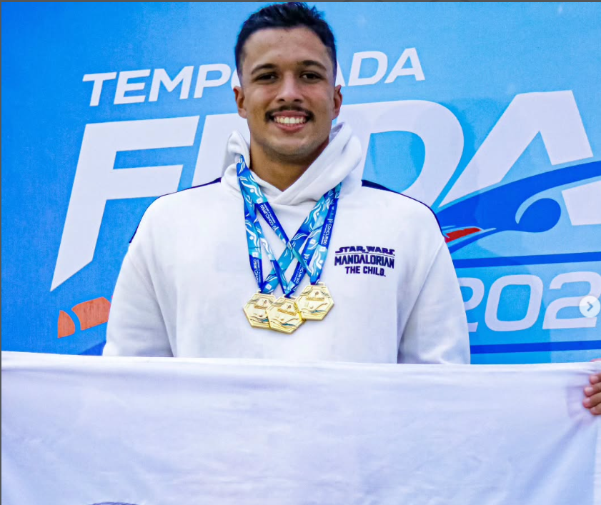
Sou Guilherme Guedes, nadador velocista natural de Salvador, Bahia. Compito na categoria Sênior e sou especialista em provas de velocidade — 50m e 100m nos estilos Livre, Borboleta, Peito e Costas.
Com uma trajetória construída com dedicação e resultados expressivos, registro 23s61 como minha melhor marca absoluta nos 50m Livre, obtida em competição da categoria Sênior. Também sou Recordista Brasileiro Master nos 50m Livre, com o tempo de 23s99 (2025), além do Recorde Baiano no Revezamento 4x100m Livre (2024), e lidero o ranking da Bahia em diversas provas. Ao longo da carreira, já conquistei mais de 180 medalhas em competições estaduais, regionais e nacionais.
Em 2026, meu foco total está no Campeonato Brasileiro de Verão, que acontecerá no Rio de Janeiro em novembro — o maior objetivo da temporada. Já representei a Bahia com sucesso no Troféu Milton Medeiros de Seleções, onde conquistei 3 ouros e um recorde de campeonato.
Evolução constante de resultados nos últimos anos, com metas claras e comprovadas para 2026.
Presença ativa em competições estaduais e nacionais, com exposição direta em mídia esportiva.
Relatórios de desempenho e retorno de imagem entregues periodicamente ao patrocinador.
Meta declarada: pódio no Brasileiro de Verão 2026. Sua marca junto de cada conquista.
01/04/2023
🥇 50m Borboleta | 🥇 100m Livre
2 Ouros19–21/05/2023 • Aracaju – SE
🥈 50m Peito | 🥈🥉 Revezamentos
2 Pratas • 1 Bronze02/06/2023
🥇 50m Livre | 🥈 Revezamento
1 Ouro • 1 Prata09–11/06/2023
🥇🥇🥇 Ouros | 🥈🥈🥈🥈 Pratas | 🥉 Bronze
3 Ouros • 4 Pratas • 1 Bronze17/02/2024
🥇 Ouro | 🥉 Bronze
1 Ouro • 1 Bronze16–18/05/2024 • Fortaleza – CE
🥇🥇 Ouros | 🥉 Bronze
2 Ouros • 1 Bronze15/06/2025
2 Ouros19–20/06/2025
2 Ouros22/07/2025 • Fortaleza – CE
1 Prata • 2 Bronzes02/08/2025
50m Livre — 23s61 (melhor marca absoluta)
Melhor Marca da Carreira26/10/2025
4 Ouros + 2 Recordes Baianos
4 Ouros • 2 Recordes22/02/2026
🥇 50m Livre | 🥇 50m Borboleta | 🥇 Revezamento
3 Ouros26–28/03/2026
🥇 50m Livre (Bicampeão Sênior) | 🥉 100m Livre | 🥉 50m Borboleta
1 Ouro • 2 Bronzes23–25/07/2026
🥇 Revezamento 4x50m Livre Misto — RECORDE DE CAMPEONATO
🥇 Revezamento 4x50m Livre Masculino
🥇 Revezamento 4x50m Medley Masculino
3 Ouros • 1 RecordeFonte: cbda.org.br — Janeiro/2026
Treinos, competições e conquistas registradas
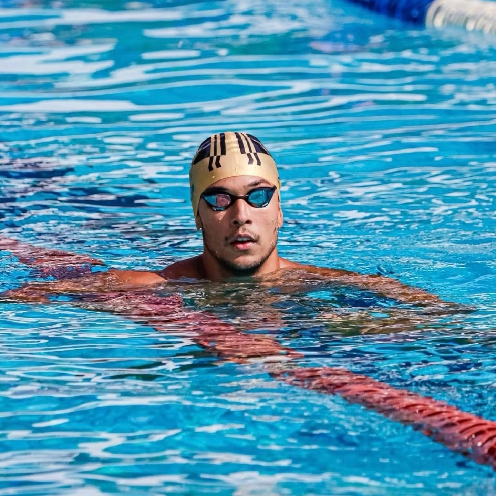
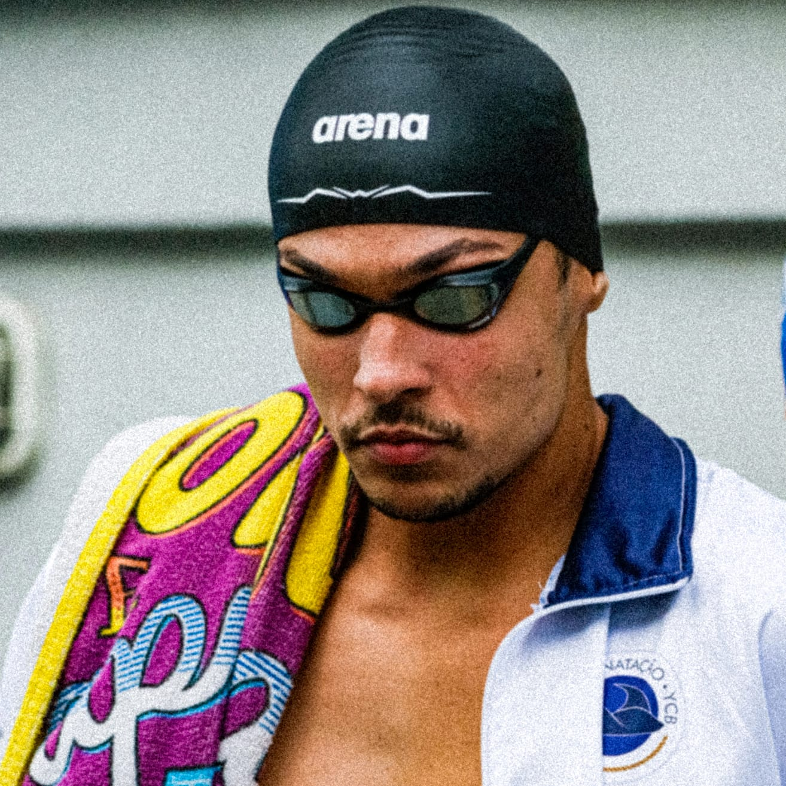
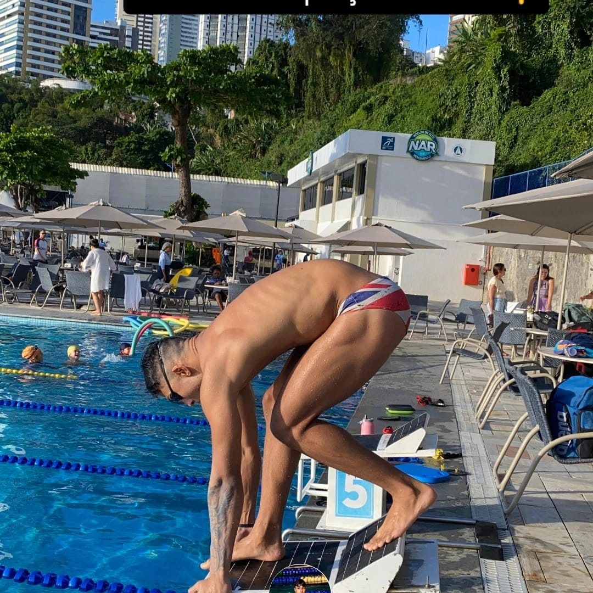
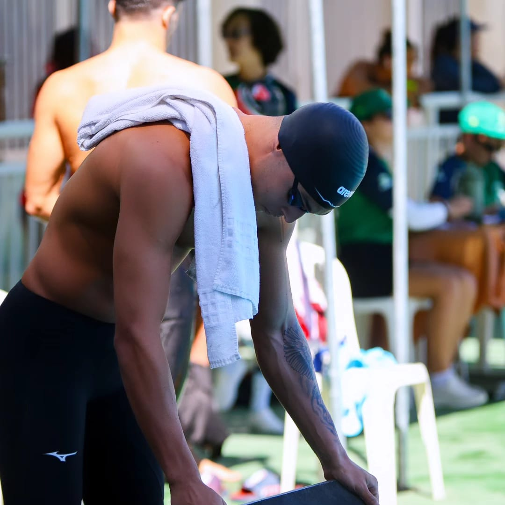
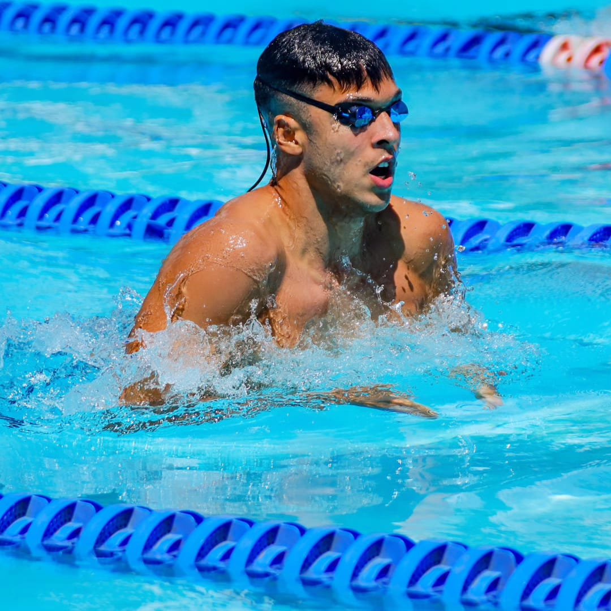
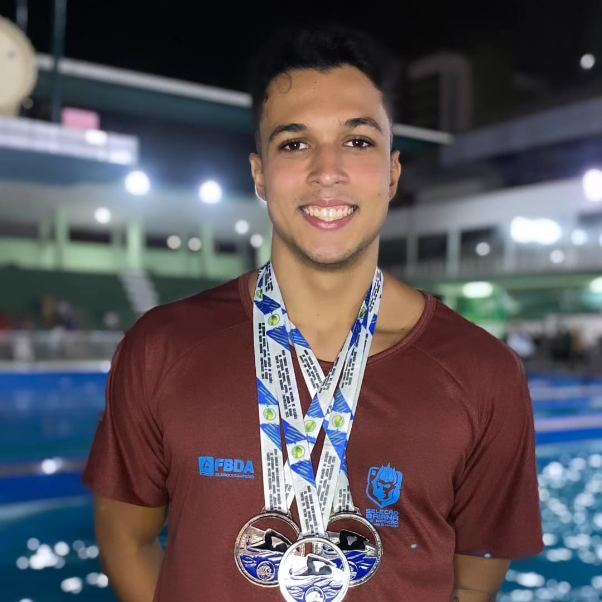
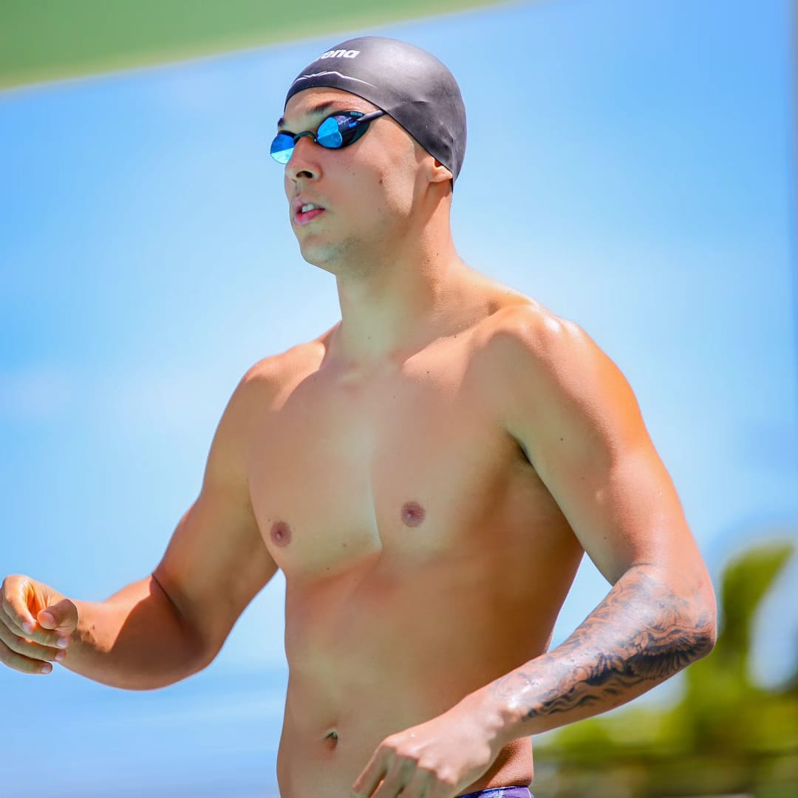
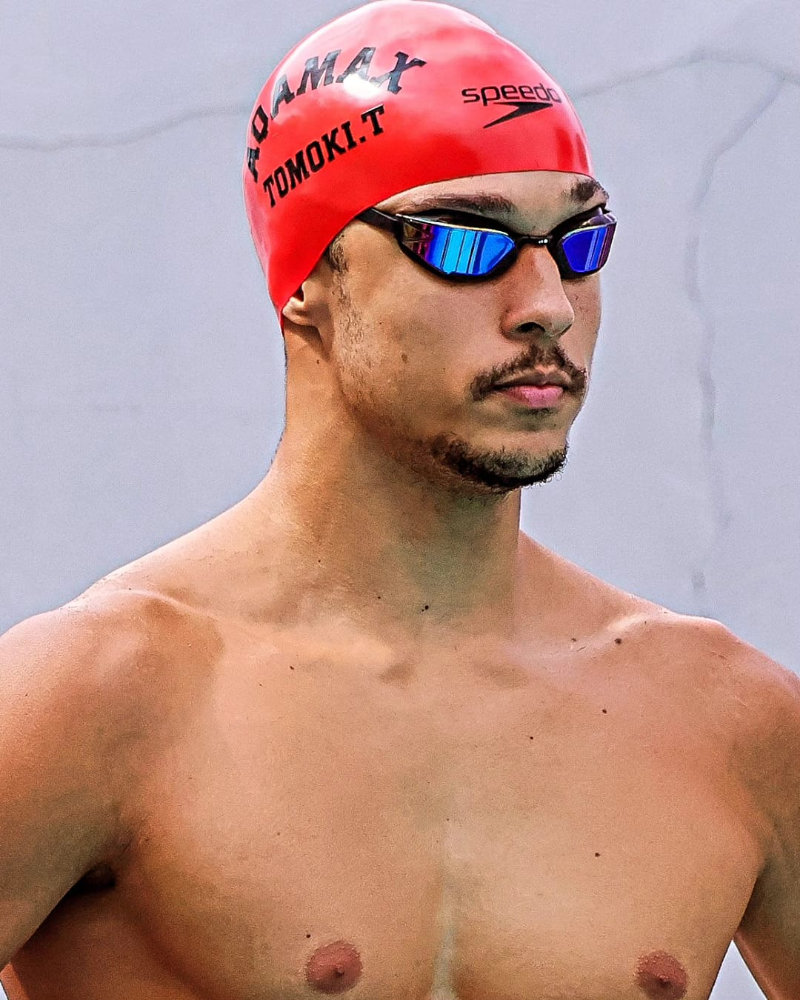
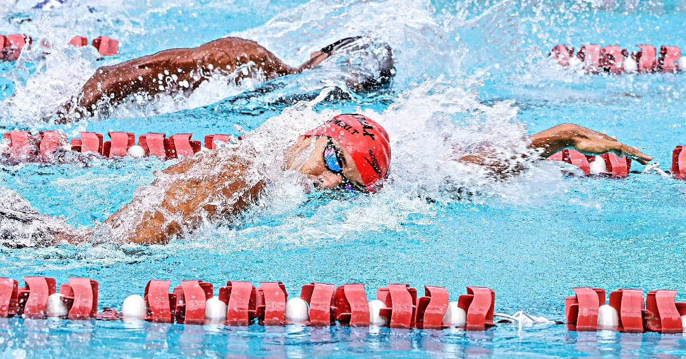
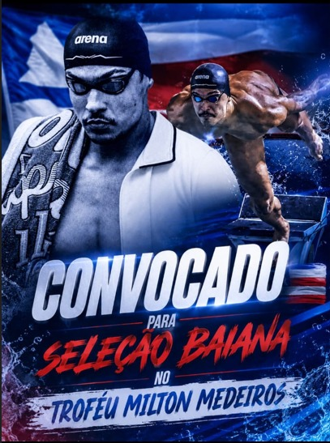
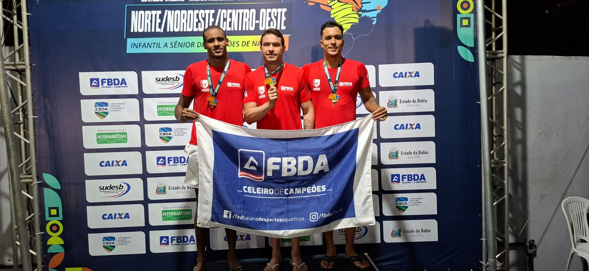
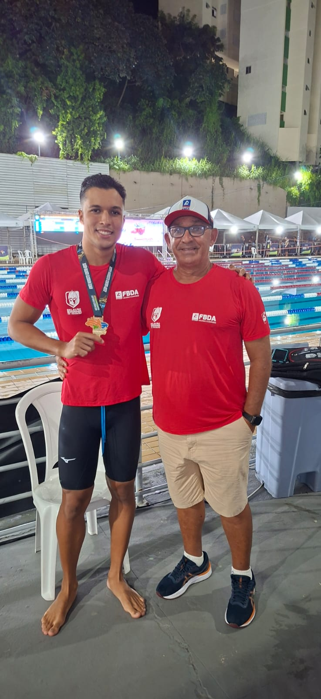
Competição por Seleções Estaduais
Representando a Seleção Baiana, Guilherme enfrentou os melhores atletas de cada estado do Norte e Nordeste do Brasil — e conquistou 3 medalhas de ouro nos revezamentos 4x50m Livre Misto, 4x50m Livre Masculino e 4x50m Medley Masculino, incluindo um RECORDE DE CAMPEONATO no 4x50m Livre Misto.
09 a 14 de novembro de 2026
Rio de Janeiro – RJ
Toda a preparação de 2026 converge para este momento. O Campeonato Brasileiro de Verão é o maior palco da natação nacional — onde Guilherme busca o pódio entre os melhores velocistas do Brasil e a chance de superar sua melhor marca de 23s61 nos 50m Livre.
Contagem regressiva
Investir em Guilherme Guedes é apostar num atleta de alto rendimento com visibilidade regional e nacional — Recordista Brasileiro Master, convocado para a Seleção Baiana e com presença garantida no Campeonato Brasileiro de Verão 2026, no Rio de Janeiro.
Presença confirmada no Campeonato Brasileiro de Verão (RJ) — o maior evento da natação nacional em 2026.
Representou a Bahia no Troféu Milton Medeiros com 3 ouros e um recorde de campeonato — prestígio e representatividade regional.
Detentor do Recorde Brasileiro Master nos 50m Livre (23s99) e melhor marca absoluta de 23s61 — credibilidade e performance para associar à sua marca.
Modelos flexíveis: logo em uniforme, posts nas redes sociais, menções em entrevistas e material de imprensa.
Cada braçada é uma oportunidade de mostrar sua marca no pódio. Fale comigo agora e receba minha mídia kit completa.
Falar Agora